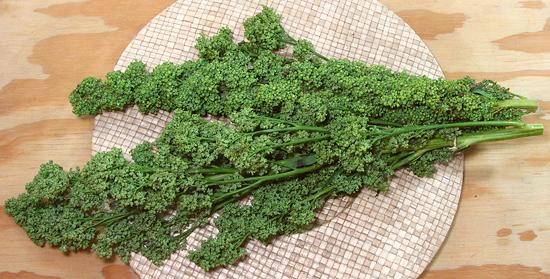

Huauzontle

[Chenopodium nuttalliae]
Native to Mexico, this close relative of Quinoa was once a major
food crop in the region, but largely displaced by corn. Today its
immature seed heads are most commonly cooked as a vegetable, but
the seeds are still harvested in parts of Mexico and ground into
flour. They don't have the coating of bitter saponins that must be
removed from Quinoa before cooking, but that makes them vulnerable
to birds, further incentive to harvest at the vegetable stage.
More on Amaranth Family.
Cooking:
One popular recipe uses Huauzontle bound with
flour and molded around a bar of Mexican cheese, then coated in a fluffy
egg batter, fried and served over tomato sauce, just as are Chiles
Rellenos. See our recipe
Huauzontle Patties.
Buying:
This is not a common item, even in markets
serving a Mexican community, and it is seasonal, but I have found it
in a large Hispanic market here in Los Angeles (Vallarta Supermarkets)
in late September and February.
Storing:
If fresh, it will keep loosely bagged in the
refrigerator for maybe 5 days.
Preparing:
Strip all the buds from the stems. This is
a bit tedious, best done sitting down at the table with a mug of beer.
1 pound of fronds will take about 1-1/4 hours to strip.
Yield:
Presuming the stems aren't overly long, 1 pound
will yield about 12 ounces (75%).
Subst:
There isn't anything close.
ch_huauz 161009 - www.clovegarden.com
©Andrew Grygus - agryg@clovegarden.com - Photos on this
page not otherwise credited are © cg1 -
Linking to and non-commercial use of this page permitted